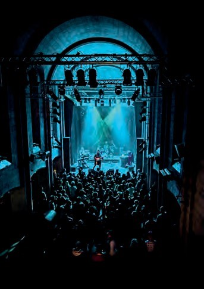
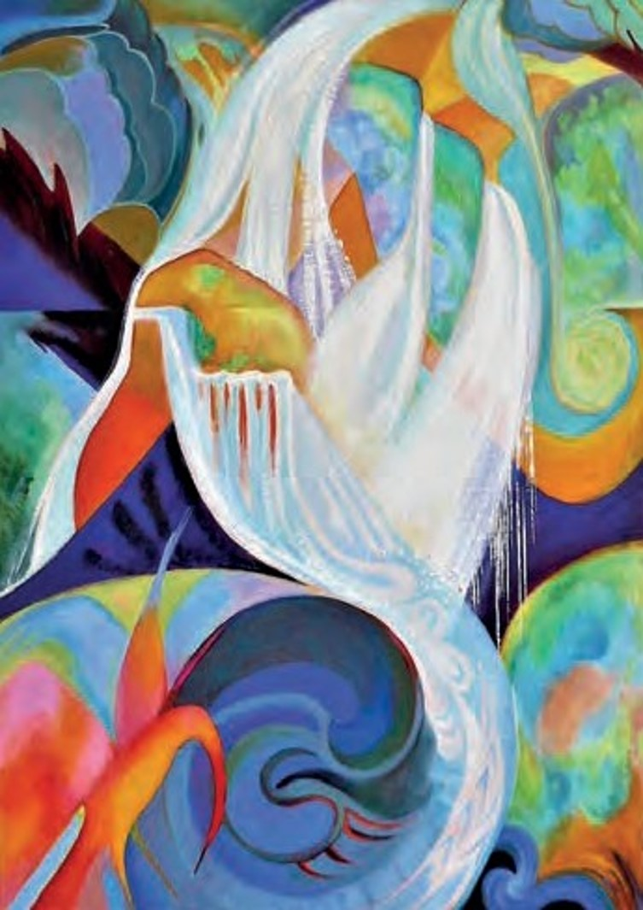
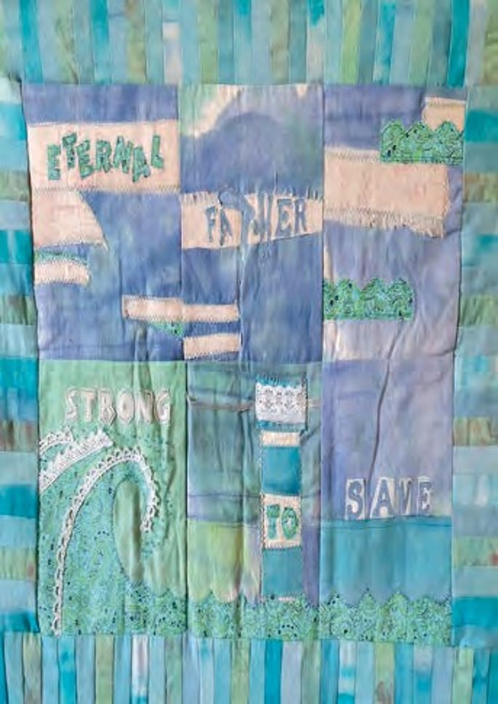

Canolfan Ucheldre

Mae Ucheldre yn rhaglennu digwyddiadau, cyngherddau, ffilmiau, darllediadau lloeren, arddangosfeydd,
cymdeithasau a gweithdai drwy gydol y flwyddyn.
Yn ystod Wythnosau Celf Ynys Môn mae’n arddangos gwaith gan artistiaid sy’n cymryd rhan, ynghyd â chynnal
gweithdai.
Ucheldre programmes events, concerts, films, satellite broadcasts, exhibitions, societies and workshops throughout the year.
During AAW it exhibits work by participating artists, along with workshops and an opportunity to meet makers and artists.
01407 763361
box-office@ucheldre.org
www.ucheldre.org
MILLBANK, CAERGYBI/HOLYHEAD, LL65 1TE
Dilynwch yr A55 i Gaergybi, yna arwyddion Canol y Dref nes y gwelwch arwyddion gwyn ar frown twristaidd.
Follow A55 into Holyhead, then Town Centre signs until brown on white tourist signs.
Peter Alexander Lane

Olew ar gynfas yw fy ngwaith yn bennaf. Dw i’n mwynhau paentio pob gwrthrych, yn enwedig rhai sy’n ymwneud â gogledd Cymru.
Fel arlunydd sydd wedi ennill gwobrau am luniau o awyrennau, dw i’n ceisio adrodd hanes hedfan awyrennau yng Nghymru.
Over 30 years as an award-winning textile artist & designer. Inspired by local coast & country with a contemporary twist.
Silk paintings & stitched appliqué artwork, limited & open edition prints, cards, mugs & coasters.
01407 742519
pete.lane34@yahoo.com
FB: PeterAlexanderLane
MILLBANK, CAERGYBI/HOLYHEAD, LL65 1TE
Dilynwch yr A55 i Gaergybi, yna arwyddion Canol y Dref nes y gwelwch arwyddion gwyn ar frown twristaidd.
Follow A55 into Holyhead, then Town Centre signs until brown on white tourist signs.
Jayne Huskisson

Dros 30 mlynedd fel ennillydd gwobrau artist tecstiliau a chynllunydd. Rwyf yn cael fy ysbrydoli gan arfordir a thir gyda naws cyfoes.
Peintiadau sidan a gwaith celf appliqué, printiadau cyfyngedig ac agored, cardiau, mygiau a chôsteri.
My work is mainly oil on canvas. I enjoy painting all subjects, especially relating to North Wales.
As a prizewinning aviation artist, I attempt to tell the story of Welsh aviation history.
01407 720962
jayne@angleseytextileart.co.uk
angleseytextileart.co.uk
MILLBANK, CAERGYBI/HOLYHEAD, LL65 1TE
Dilynwch yr A55 i Gaergybi, yna arwyddion Canol y Dref nes y gwelwch arwyddion gwyn ar frown twristaidd.
Follow A55 into Holyhead, then Town Centre signs until brown on white tourist signs.
Philippa Jacobs

Cynhelir Grŵp Portreadu yn Ucheldre ar 21/4/22 (10yb - 1yp).
Mae Stiwdio Pen y Braich, Llandderfel, Bala, LL23 7PY ar agor drwy’r flwyddyn. Cysylltwch i drefnu apwyntiad os gwelwch yn dda.
Byddaf bob amser yn brwydro gydag anawsterau technegol i fynegi syniadau - mae pob pwnc yn bosib.
There is a Portrait Group in Ucheldre on 21/4/22 (10am-1pm).
My Pen y Braich Studio, Llandderfel, Bala, LL23 7PY, is open but please ring for an appointment.
I continue to grapple with the difficulties of technique to express ideas -
all subjects are possibilities
01678 530413
philippa.penybraichstudio@gmail.com
MILLBANK, CAERGYBI/HOLYHEAD, LL65 1TE
Dilynwch yr A55 i Gaergybi, yna arwyddion Canol y Dref nes y gwelwch arwyddion gwyn ar frown twristaidd.
Follow A55 into Holyhead, then Town Centre signs until brown on white tourist signs.
Grace D Williamson

Artist, cynllunydd, awdur, athrawes, darlithydd prifysgol, merch busnes a chantores!
Mae Grace yn cyfuno ei ffydd a’r chreadigrwydd i greu ystod eang o brintiadau, cardiau, anrhegion ac offer cartref. Mae ei gwaith yn aml-gyfrwng.
Artist, designer, writer, teacher, university lecturer, business woman and singer!
Grace combines her faith and creativity to create a unique range of prints, cards, gifts and household items. She uses a variety of media.
07936 652303
BlessingsCottage@ymail.com
Instagram: BlessingsCottageWorkshop
MILLBANK, CAERGYBI/HOLYHEAD, LL65 1TE
Dilynwch yr A55 i Gaergybi, yna arwyddion Canol y Dref nes y gwelwch arwyddion gwyn ar frown twristaidd.
Follow A55 into Holyhead, then Town Centre signs until brown on white tourist signs.